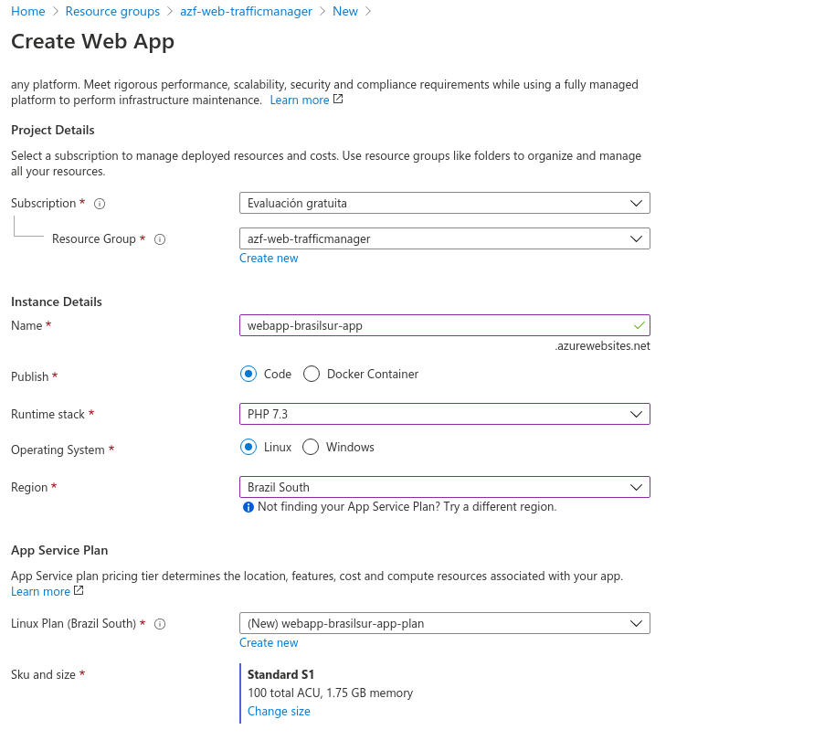
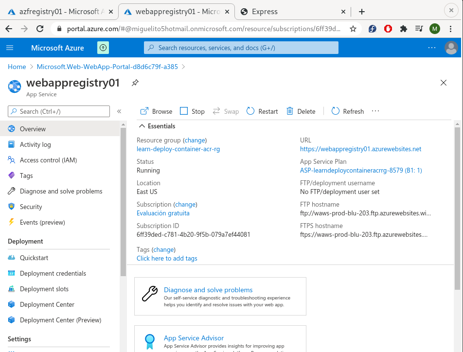
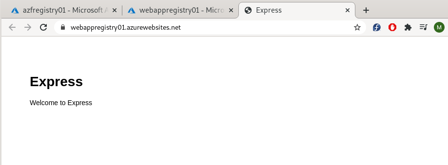
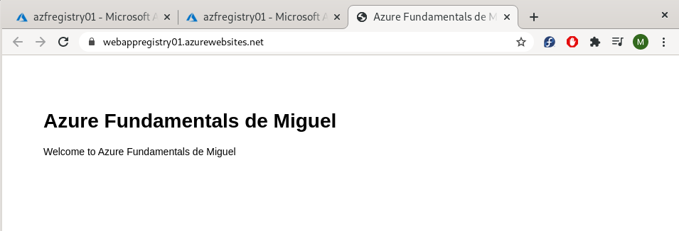
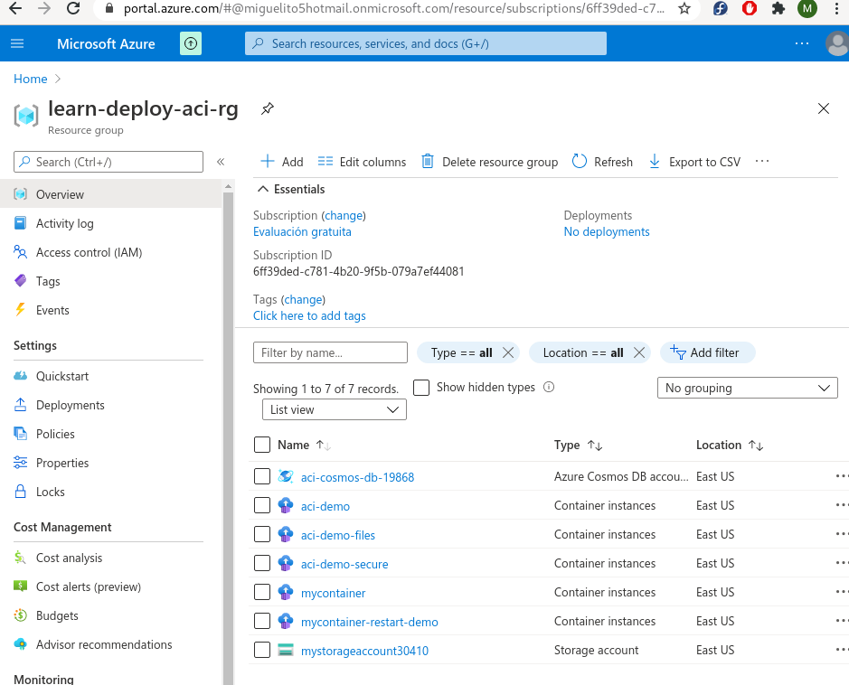

AZURE
QUE ES
-
Microsoft Azure es un servicio de Informática en la Nube creado por Microsoft para construir, testear, desplegar y gestionar aplicaciones y servicios a través de centros de datos gestionados por Microsoft.
-
Microsoft Azure, como otros proveedores de nube, nos permite alquilar recursos como espacio de almacenamiento o ciclos de CPU en equipos físicos que no debo administrar. Solo se paga por lo que usa (o al menos se mide).
-
Los servicios informáticos ofrecidos suelen variar en función de cada proveedor. Normalmente estos servicios incluyen:
- Potencia de proceso: por ejemplo, aplicaciones web o servidores Linux.
- Almacenamiento: por ejemplo, archivos y bases de datos.
- Redes: por ejemplo, conexiones seguras entre el proveedor de nube y la empresa.
Potencia de proceso
- Cuando hacemos virtualmente cualquier acción en internet, como pagar una factura online, leer un periódico y enviar un correo electrónico, estamos interactuando con servidores de nube que procesan cada solicitud y devuelven una respuesta. Todo esto requiere de cómputo.
- Maquina virtual
- Contenedores
- Serverless o informatica sin servidor
Almacenamiento
-
La mayoría de las aplicaciones leen y escriben datos. Y en este sentido, el tipo de datos y cómo se almacenan puede ser diferente según el tipo de aplicación, la necesidad y velocidad requerida.
-
Los proveedores de nube suelen ofrecer soluciones de almacenamiento para máquinas virtuales, aplicaciones web, bases de datos, archivos de datos y analítica. Por ejemplo, si quiere almacenar texto o un clip de película, podría usar un archivo en disco. Si tuviera un conjunto de relaciones (por ejemplo, una libreta de direcciones), podría decidirse por un enfoque más estructurado, como usar una base de datos.
-
La ventaja de utilizar almacenamiento basado en nube, es que no debemos preocuparnos por el escalado. Si se necesita más espacio, se puede agregar pagando un poco más de precio, e inclusive si las necesidades de almacenamiento bajan, también bajará el precio asociado.
Redes
En todos estos casos, las redes cobran una importancia vital. Los proveedores de nube suelen tener servicios de redes que nos permiten:
+ Crear y configurar Redes Virtuales.
+ Crear y conectar de extremo a extremo redes en la nube con una infraestructura local (conocidas como site-to-site, y point-to-site).
+ Parametrizar reglas de acceso a recursos.
+ Monitorear tráfico de redes.
+ Aplicar reglas, restricciones y protecciones a las comunicaciones.
CREAR CUENTA
-
- A través de azure.com: es la forma más rápida y fácil que tienen las organizaciones de todos los tamaños para empezar a usar Azure. Puede administrar las implementaciones y el uso de Azure, como así también obtener una factura mensual de Microsoft por los servicios usados.
- Con la ayuda de un Partner de Microsoft. Es un modelo para obtener facturación local en tu país. De esta manera, Azure se brindará como servicio administrado a través de un partner, quién te proporcionará el acceso y la facturación, junto con un soporte técnico básico.
- A través de un representante directo de Microsoft, opción pensada para organizaciones de gran tamaño o clientes que ya trabajan con la marca. A diferencia de azure.com (que requiere tarjeta de crédito), esto habilitará un tipo de contrato especial con varias ventajas al momento de necesitar varias suscripciones.
-
Los servicios de Azure están disponibles a través de Centros de Datos gestionados por Microsoft. Los mismos están conformados por edificios.
-
xisten +60 regiones anunciadas en todo el mundo, y muchas que están anunciadas como adicionales futuras. Esto representa una presencia física en 140 países. En el mapa podrás ver la ubicación de los centros de datos, a excepción de 3 correspondientes a gobierno por lo cual su ubicación es secreta.
-
SLA significa en inglés “service level agreement”, y en español “acuerdo de nivel de servicio”. Es un acuerdo escrito entre un proveedor de servicio y su cliente con objeto de fijar el nivel acordado para la calidad de dicho servicio. Este nivel puede ser un porcentaje que representa la disponibilidad mínima
PRINCIPIO 5-3-2
-
La informática en la nube es un metodo de gestion de recursos de IT donde los usuarios acceden a los recursos virtuales de computo, red y almacenamiento que estan disponibles online. Estos recursos se pueden aprovionar de manera instantanea y elastica.
-
Se compone de:
- 5 Caracteristicas
- 3 metodos de entrega
- 2 modelos de implementacion
Caracteristicas
- Autoservicio y bajo demanda: un consumidor puede provisionarse de caracteristicas como tiempo de uso, almacenamiento, memoria...
- Acceso amplio y ubicuo: los recursos pueden ser accecidos desde cualquier lugar y cualquier dispositivo.
- Ubicacion transparente y agrupacion de recursos: suelen estar en diferentes localizaciones sobre distintos recursos fisicos o virtuales que son dinamicamente asignados.
- Elasticidad rapida (estirarse y contraerse): pueden aumentar en epocas de mucha carga asi como reducirlo cuando no se use.
- Servicio medido (e incluso pago por uso): recursos y capacidades segun lo que necesitas.
Metodos de entrega
- IaaS(Infraestructura como Servicio):
- Cliente tiene capacidad de utilizar almacenamiento, red, recursos sofware, SO, app.
- No tiene el control sobre la infraestructura pero sino tiene el control del resto apartir del SO.
- COntrol limitado sobre red como el firewall
- Ejemplo serian las maquinas virtuales
- PaaS(Plataforma como Servicio):
- Podemos desplegar apps propias o de terceros
- Control sobre las apps y la configuracion de ellas
- Ejemplo seria servicios hosting
- Saas(Software como Servicio):
- Capacidad de usar aplicaciones en una infraestructura de nube que cumple con las 5 caracteristicas
- No tenemos control sobre ningun componente, solo lo usamos.
- Ejemplo seria Office 365, exchange, gmail, yahoo, google apps.
Modelos de implementación
- Nube Privada: en mi propio centro de datos
- Nube Pública: en azure o otros proveedores de servicios
- Puede haber la mezcla con Nube Hibrida.
MAQUINAS VIRTUALES
- Tipo de recurso escalable por Azure
- Se tiene control total sobre la configuración y se puede instalar de todo
- No es necesario comprar hardware fisico para escalar o ampliar
- Azure tiene servicios para supervisar, proteger y administrar las actualizaciones y revisiones del sistema operativo
- Soy responsable de:
- Mantener el SO y sus actualizaciones
- Trabar sobre la performance
- Monitorear el espacio de disco usado
- Componentes:
- Disco virtual: el disco es el que tendrá, por ejemplo, el sistema operativo instalado. Gracias al disco virtual puedo iniciar el equipo y guardar información en forma persistente
- Placa de red virtual: al igual que en un equipo físico, es la que me facilitará la conexión con una o más redes.
- Direcciones IP: gracias a la cual podré conectarme al equipo virtual. Estas direcciones IP pueden ser privadas y públicas.
- Grupos de seguridad de red: que nos ayudarán a definir desde qué origenes me puedo conectar, y hacia qué destinos puedo acceder, teniendo en cuenta protocolos, puertos, etc. Los Network Security Groups son una manera ágil de gestionar los permisos de red, para una o más máquinas.
- Configurar: puedo el nombre de la MV, el SO y el tamaño. Tiene al menos dos discos, uno para el SO y otro temporal para la memoria virtual.
- Spot Virtual: herramienta que lo que no se use se vaya ahi para ahorrar.
CREAR MV
Assignment Tasks
A
Ingresar al Portal de Azure. Crear un "Grupo de Recursos" [Resource Group] con el nombre "azf-vms-1"
Completed on 4 noviembre, 2020 7:01 pm
B
Dentro del Resource Group, seleccionar la opción "Crear recurso" [Create resources]. Seleccionar el grupo "Cómputo" [Compute] y de la lista "Máquina Virtual" [Virtual Machine].
Completed on 4 noviembre, 2020 7:01 pm
C
En el asistente de creación, validar que la suscripción seleccionada sea la correcta (probablemente sea "FREE TRIAL") y el Resource Group seleccionado es el correcto: "azf-vms-1".
Completed on 4 noviembre, 2020 7:01 pm
D
Ingresar un nombre para la máquina virtual, por ejemplo "azf-vm-windows-2019".
Completed on 4 noviembre, 2020 7:01 pm
E
Seleccionar una región de Azure. Por ejemplo "Este de Estados Unidos" [East US], una imagen "WIndows Server 2019 Datacenter" y un tamaño de máquina virtual (explorar todas las imágenes y elegir un tamaño como "B1ms" (es un equipo barato para este ejercicio).
Completed on 4 noviembre, 2020 7:01 pm
F
Ingresar un usuario [Username] y una contraseña dos veces [Password]. ¡No olvidarlas!
Completed on 4 noviembre, 2020 7:01 pm
G
Seleccionar el puerto de entrada [Inbound port] "RDP (3389)" para poder ingresar luego al equipo.
Completed on 4 noviembre, 2020 7:02 pm
H
Ir al paso siguiente: "Discos" [Disks]. Ingresar un Disco de Datos adicional [Create new disk] del menor tamaño posible.
Completed on 4 noviembre, 2020 7:06 pm
I
Ir al siguiente paso "Redes" [Networking]. Crear una nueva red con el nombre "azf-vnet-1" con el espacio de direcciones "10.0.0.0/16" y crear una subnet con el nombre "Sub1" y el espacio de direcciones "10.0.0.0/24". Validar que una vez creada la red, esté seleccionada en "Virtual Network" y "Subnet" en el asistente del equipo virtual.
Completed on 4 noviembre, 2020 7:11 pm
J
Crear una IP pública con el nombre "azf-ip-1", el "SKU Basic" y asignación "Static".
Completed on 4 noviembre, 2020 7:11 pm
K
Seleccionar el grupo de seguridad de red [NIC network security group] en "Basic".
Completed on 4 noviembre, 2020 7:11 pm
L
Validar que los puertos habilitados son solo "RDP (3389)".
Completed on 4 noviembre, 2020 7:11 pm
M
Ir al siguiente paso "Administración" [Management].
Completed on 4 noviembre, 2020 7:13 pm
N
Seleccionar en diagnóstico de booteo [Boot diagnostics] en "On". Esto requerirá crear una cuenta de almacenamiento.
Completed on 4 noviembre, 2020 7:16 pm
O
En el campo "Cuenta de Almacenamiento de Diagnóstico" [Diagnostics storage account] crear una nueva cuenta de almacenamiento con el nombre "azfstorageXXXX" donde XXXX es un número aleatorio generado por ti (dado que los nombres de cuentas de almacenamiento deben ser únicos en todo Azure). El tipo de cuenta debe ser "Storage (general purpose v1) y "Locally-redundant storage (LRS).
Completed on 4 noviembre, 2020 7:17 pm
P
Habilitar el apagado automático [Auto-shutdown] y elegir un horario de apagado para tu zona geográfica.
Completed on 4 noviembre, 2020 7:17 pm
Q
No modificar el resto de las opciones e ir al siguiente paso "Avanzado" [Advanced].
Completed on 4 noviembre, 2020 7:18 pm
R
No modificar ninguna opción e ir al siguiente paso "Etiquetas" [Tags].
Completed on 4 noviembre, 2020 7:18 pm
S
Ir al último paso "Revisión y Creación" [Review + create]. Cuando pase todas las validaciones, revisar el resumen de opciones seleccionadas que coincidan con lo solicitado y crear la máquina.
Completed on 4 noviembre, 2020 7:19 pm
T
Cuando finalice la creación, ir al equipo virtual y seleccionar "Conectar" [Connect] y elegir "RDP". Se descargará un archivo, y desde el cliente de Escritorio Remoto de tu computadora conectarse.
U
Ingresar el nombre de usuario y contraseña que ingresamos en pasos anteriores, y comprobar que nos podemos conectar al equipo.
V
Ir al Grupo de Recursos [Resource Group] que hemos creado y comprobar que todos los recursos (máquina virtual, discos, placas de red) están creados.


HERRAMIENTAS AZURE
- Azure Portal para interactuar con Azure a través de una interfaz gráfica de usuario (GUI).
- Azure PowerShell y la interfaz de la línea de comandos de Azure (CLI) para las interacciones con Azure de línea de comandos y basadas en automatización.
- Azure Cloud Shell para una interfaz de línea de comandos basada en web.
- Azure Mobile App para supervisar y administrar los recursos desde el dispositivo móvil.
AZURE POWERSHELL
-
Instamos la herramienta AzurePowershell, apartir de la versión 7 es multiplataforma.
# Register the Microsoft signature key
sudo rpm --import https://packages.microsoft.com/keys/microsoft.asc
# Register the Microsoft RedHat repository
curl https://packages.microsoft.com/config/rhel/7/prod.repo | sudo tee /etc/yum.repos.d/microsoft.repo
# Update the list of products
sudo dnf check-update
# Install a system component
sudo dnf install compat-openssl10
# Install PowerShell
sudo dnf install -y powershell
# Start PowerShell
pwsh
- Instalamos el modulo de AZ powershell:
pwsh
Install-Module -Name Az
-
Nos conectamos con nuestra cuenta yendo al link que nos indica:
PS /home/isx46410800/Documents> Connect-AzAccount -
Orden de listar los Resources Groups
Get-AzResourceGroup:
PS /home/isx46410800/Documents> Get-AzResourceGroup
ResourceGroupName : NetworkWatcherRG
Location : eastus
ProvisioningState : Succeeded
Tags :
ResourceId : /subscriptions/6ff39ded-c781-4b20-9f5b-079a7ef44081/resourceGroups/NetworkWatcherRG
#
PS /home/isx46410800/Documents> Get-AzResourceGroup | Format-Table -AutoSize
ResourceGroupName Location ProvisioningState Tags TagsTable ResourceId
----------------- -------- ----------------- ---- --------- ----------
NetworkWatcherRG eastus Succeeded /subscriptions/6ff39ded-c781-4b20-9f5b-079a…
- Crear un Resource Group por comando
New-AzResourceGroup -Name "azf-rgexmaple-rg" -Location "EastUs":
PS /home/isx46410800/Documents> New-AzResourceGroup -Name "azf-rgexmaple-rg" -Location "EastUs"
ResourceGroupName : azf-rgexmaple-rg
Location : eastus
ProvisioningState : Succeeded
Tags :
ResourceId : /subscriptions/6ff39ded-c781-4b20-9f5b-079a7ef44081/resourceGroups/azf-rgexmaple-rg
#
PS /home/isx46410800/Documents> Get-AzResourceGroup | Format-Table -AutoSize
ResourceGroupName Location ProvisioningState Tags TagsTable ResourceId
----------------- -------- ----------------- ---- --------- ----------
NetworkWatcherRG eastus Succeeded /subscriptions/6ff39ded-c781-4b20-9f5b-079a…
azf-rgexmaple-rg eastus Succeeded /subscriptions/6ff39ded-c781-4b20-9f5b-079a…
AZURE CLI
-
Instalación linux:
sudo rpm --import https://packages.microsoft.com/keys/microsoft.asc
#
sudo sh -c 'echo -e "[azure-cli]
name=Azure CLI
baseurl=https://packages.microsoft.com/yumrepos/azure-cli
enabled=1
gpgcheck=1
gpgkey=https://packages.microsoft.com/keys/microsoft.asc" > /etc/yum.repos.d/azure-cli.repo'
#
sudo yum install azure-cli
-
Iniciamos sesion haciendo login:
az login -
Listamos los resource groups con
az group list --output table:
Name Location Status
---------------- ---------- ---------
NetworkWatcherRG eastus Succeeded
azf-rgexmaple-rg eastus Succeeded
- Creamos un resource group con
az group create --location "eastus" --name "azf-cli-rg":
{
"id": "/subscriptions/6ff39ded-c781-4b20-9f5b-079a7ef44081/resourceGroups/azf-cli-rg",
"location": "eastus",
"managedBy": null,
"name": "azf-cli-rg",
"properties": {
"provisioningState": "Succeeded"
},
"tags": null,
"type": "Microsoft.Resources/resourceGroups"
}
Name Location Status
---------------- ---------- ---------
NetworkWatcherRG eastus Succeeded
azf-rgexmaple-rg eastus Succeeded
azf-cli-rg eastus Succeeded
AZURE CLOUD SHELL
- Es un shell a través del navegador desde cualquier sistema operativo.
- Necesitamos crear un storage y file share para utilizarlo.
- Ahora dentro podemos usar las mismas ordenes que cli por ejemplo y ver/crear resource groups como ejemplo:
miguel@Azure:~$ az group create --location "eastus" --name "azf-cloudshell-example-rg"
{
"id": "/subscriptions/6ff39ded-c781-4b20-9f5b-079a7ef44081/resourceGroups/azf-cloudshell-example-rg",
"location": "eastus",
"managedBy": null,
"name": "azf-cloudshell-example-rg",
"properties": {
"provisioningState": "Succeeded"
},
"tags": null,
"type": "Microsoft.Resources/resourceGroups"
}
miguel@Azure:~$ az group list --output table
Name Location Status
------------------------- ---------- ---------
NetworkWatcherRG eastus Succeeded
azf-rgexmaple-rg eastus Succeeded
azf-cli-rg eastus Succeeded
azf-cloudshell-rg eastus Succeeded
azf-cloudshell-example-rg eastus Succeeded
- Podemos verlo en pantalla completa con
www.shell.azure.com
EJEMPLO DE CREAR MV POR SCRIPT
- Crear una MV con CLI a través de cloud shell:
# create a resource group
az group create --name azf-crear-mv-cli --location eastus
# Create a virtual network net and subnet.
az network vnet create --resource-group azf-cloudshell-example-rg --name azf-vnet-1 --address-prefix 10.0.0.0/16 --subnet-name sub1 --subnet-prefix 10.0.0.0/24
# Create a public IP address.
az network public-ip create --name myPublicCliIP --resource-group azf-cloudshell-example-rg --sku Basic --allocation-method Static
# create vm customized
az vm create --subscription "Evaluación gratuita" -g azf-cloudshell-example-rg --name vm-cli-example --image win2019datacenter --location eastus --size Standard_B1ms --admin-username vmadmin --admin-password mi--GU--el14 --vnet-name azf-vnet-1 --subnet sub1
# add new optional disk
az vm disk attach -g azf-cloudshell-example-rg --vm-name vm-cli-example --name myDataDisk --new --size-gb 4
# input port to connect VM
az vm open-port --port 3389 --resource-group azf-cloudshell-example-rg --name vm-cli-example
# habilitar el auto shutdown
az vm auto-shutdown -g azf-cloudshell-example-rg -n vm-cli-example --time 0200
# borrar recurso
az group delete --name azf-cloudshell-example-rg
AZURE APP SERVICE
-
Azure App Service es un servicio de alojamiento web totalmente administrado que permite crear aplicaciones web, back-ends móviles y API RESTful. Desde sitios web pequeños hasta aplicaciones web con una escala global, existen opciones de precios y rendimiento que se adaptan a todas las necesidades.
-
Azure App Service permite desarrollar software en el lenguaje preferido, ya sea. NET, .NET Core, Java, Ruby, Node.js, PHP o Python. Las aplicaciones se ejecutan y escalan fácilmente en los entornos basados tanto en Windows como en Linux.
-
Azure App Service no solo agrega a la aplicación la funcionalidad de Microsoft Azure, como la seguridad, el equilibrio de carga, el escalado automático y la administración automatizada. También puede sacar partido de las funcionalidades de DevOps, por ejemplo, la implementación continua desde Azure DevOps, GitHub, Docker Hub y otros orígenes, la administración de paquetes, entornos de ensayo, dominio personalizado y certificados TLS/SSL.
-
Con Azure App Service se paga por los recursos de proceso de Azure que se utilizan. Los recursos de proceso que usa se determinan mediante el plan de App Service en el que ejecuta las aplicaciones, y determina el costo del servicio.
Crear una Web App
-
Home - Crear recurso - Web App
-
Configuración inicial:
A
Crear una nueva Web App (elegir del menú destacados según indica el video).
Completed on 6 noviembre, 2020 11:55 pm
B
Elegir la suscripción, crear un resource group desde el mismo asistente, y completar un nombre: por ejemplo "azf-webapp-codexxx" donde xxx son 3 números aleatorios, tanto para la web app como para el resource group. No olvides este RG que lo utilizaremos más adelante.
Completed on 6 noviembre, 2020 11:55 pm
C
Seleccionar la forma de publicación [Publish] "Code". Elegir el Runtime stack .NET Core 3.1 (LTS) y la plataforma Windows.
Completed on 6 noviembre, 2020 11:55 pm
D
Elegir la región que Azure propone. Se puede seguir el del ejemplo: Central US.
Completed on 6 noviembre, 2020 11:55 pm
E
Crear un Windows Plan con el nombre: "azf-webapp-code-plan" y el tamaño Standard S1 (no te preocupes por el costo, en breve lo eliminaremos).
F
En las opciones de monitoreo, NO habilitaremos Application Insights.
Completed on 6 noviembre, 2020 11:56 pm
G
No completaremos nada en los tags.
H
Revisaremos y crearemos la Web App.
I
Comprobar que desde la URL en la página de Overview que la web app funciona correctamente.
- Veremos una URL donde tenemos nuestra web app


Services y Plans
-
El plan es el hardware del que voy a disponer.
-
El service es la app o conjunto de apps dentro del plan.
-
En App Service, cada aplicación se ejecuta en un Plan de App Service. En forma básica, un App Service Plan define un conjunto de recursos de proceso para que una aplicación web se ejecute. Estos recursos de proceso son análogos a la granja de servidores de un hospedaje web convencional.
-
Cuando se crea un plan de App Service en una región determinada (por ejemplo, Oeste de Europa), se crea un conjunto de recursos de proceso para ese plan en dicha región. Todas las aplicaciones que coloque en este plan de App Service se ejecutan en estos recursos de proceso según lo definido por el plan de App Service. Cada plan de App Service define:
- Región (oeste de EE. UU., este de EE. UU., etc.).
- Número de instancias posibles de VM (si, por detrás hay VMs).
- Tamaño de las instancias de VM (pequeño, mediano, grande).
- Plan de tarifa (Gratis, Compartido, Básico, Estándar, Premium, PremiumV2 y Aislado).
-
Si bien inicialmente puede resultar algo confuso, cuando en Azure veamos el término “App Service” nos referimos a las Web Apps, API Apps & Mobile Apps. Cuando veamos el término “App Service Plans” nos referimos explícitamente a los planes.
-
La relación entre un App Service Plan un un App Service es una relación 1:muchos :-). Una App Service Plan puede contener muchos App Services, mientras que un App Service sólo puede estar dentro de un App Service Plan. En todos los casos, cuando contratamos un App Service Plan “Basic”, “Standard”, “Premium” e “Isolado”, sólo pagamos por el tamaño del plan que contratemos (scale up) y la cantidad de instancias con las que escalemos (scale out, predeterminadamente configurada en 1):
- Aunque tengamos muchos App Services (Web Apps, API Apps & Mobile Apps) dentro del mismo plan, sólo pagaremos por el tamaño y cantidad de instancias del App Service Plan, y no por cada una de las Apps que tenga dentro.
- Por supuesto, como el App Service Plan determina un hardware asociado, tendremos un límite. Si ponemos muchos sitios web dentro que consumen muchos recursos y/o tienen demasiado tráfico, nuestro App Service Plan comenzará a arrojar errores por no disponibilidad de servicio.
- Este punto no es menor, y debe ser planeado en el diseño de la solución completa de Azure.
Crear una Web App Container
-
la creación de una Web App for Containers. Esto significa, que nuestra Web App estará en un contenedor de ejemplo en Microsoft Azure. Recordemos que Azure App Service permite generar diversas aplicaciones:
- Web App.
- API App.
- Mobile App.
-
En escencia, son similares, si bien encontraremos en cada una de ellas particularidades propias. La más simple es una Web App, y es justamente en este ejercicio la que generaremos. A diferencia del anterior donde también generamos una Web App, esta vez lo haremos utilizando Docker.
-
Configuración inicial:
A
Crear un nuevo recurso de tipo "Web App" que esta en la lista de populares.
B
Crear un grupo de recursos según el gusto que tengas. Si elijes un nuevo grupo de recursos (diferente al ejercicio de creación de Web App Simple) recuerda BORRAR este nuevo grupo de recursos al finalizar el ejercicio. En caso que sea el mismo, puedes dejarlo dado que más adelante borraremos todo.
C
Elegiremos el tipo de publicación "Docker Container" y el sistema operativo "Linux".
D
Generaremos un nuevo App Service Plan y un tamaño de tipo "S1".
E
En la configuarción de "Docker" elegiremos "Single Container".
F
Con respecto al origen de la instancia elegiremos "Quickstart". La opción "sample" será "NGINX".
G
No debemos habilitar nada de monitoreo, dado que no está soportado con contenedores.
H
Revisar y crear el recurso.
I
Comprobar por la URL del Web App que todo está funcionando como esperamos.

Crear API App
- Pasos:
A
Ingresar al Resource Group que hemos generado en la "Creación de una Web App Simple". Debería tener el formato "azf-webapp-codexxx" con 3 números elegidos por ti.
B
Creamos un nuevo recurso y buscamos en la barra de búsqueda "API App".
C
Ingresaremos un nombre para la app, respetando el formato "azf-apiapp-codexxx" ingresando los 3 mismos números aleatorios puestos para el resource group y la web app anterior.
D
El resource group ya debería estar seleccionado (es el que ya existe).
E
En la opción de "App Service Plan" debemos elegir el que ya existe porque lo generamos antes. Su nombre debería ser "azf-webapp-code-plan".
F
Le damos un clic en "Create".
G
Una vez que se genere, vamos a comprobar que el sitio funciona bien.
H
Comprobar que en el listado de Apps en el "App Service Plan" ahora tenemos más items.

- En el Deployment center o en el centro de despliegue podemos configurar archivos o repositorios de donde coger nuestro código fuente para la aplicación web.
https://docs.microsoft.com/es-mx/learn/modules/create-publish-webapp-app-service-vs-code/3-exercise-create-web-application-vs-code?pivots=pythonflask
ALMACENAMIENTO AZURE
-
La plataforma de Azure Storage es la solución de almacenamiento en la nube de Microsoft para los escenarios modernos de almacenamiento de datos.
-
Los servicios principales de almacenamiento ofrecen un almacén de objetos escalable de forma masiva para objetos de datos, un almacenamiento en disco para máquinas virtuales (VM) de Azure, un servicio de sistema de archivos para la nube, un almacén de mensajes para mensajería confiable y un almacén NoSQL.
-
Los servicios principales y considerados primitivos de Azure Storage son:
- Blobs de Azure [Azure Blobs]: con opciones de blobs en bloques, anexos y páginas.
- Archivos de Azure [Azure Files]: recursos compartidos para uso local y en la nube.
- Colas de Azure [Azure Queues]: almacén de mensajería simple.
- Tablas de Azure [Azure Tables]: almacén NoSQL sin esquema para datos estructurados.
-
Además, consideraremos el servicio de Azure Disks, un servicio totalmente administrado para los discos de nuestras máquinas virtuales:
- Discos de Azure [Azure Disks]: conocidos como “discos administrados”.
Azure disks
-
Los discos administrados de Azure son volúmenes de almacenamiento de nivel de bloque administrados por Azure y utilizados con Azure Virtual Machines. Los discos administrados son como un disco físico en un servidor local, pero virtualizados. Con los discos administrados, todo lo que deberás hacer es especificar el tamaño del disco, el tipo de disco y aprovisionar el disco. Una vez que aprovisiona el disco, Azure se encarga del resto.
-
Los tipos de discos disponibles son ultra, unidades de estado sólido (SSD) premium, SSD estándar y unidades de disco duro estándar (HDD).
Blob storage
-
Azure Blob Storage es la solución de almacenamiento de objetos de Microsoft para la nube. Blob Storage está optimizado para el almacenamiento de cantidades masivas de datos no estructurados. En la primera lección de esta sección, ya hemos aprendido sobre los diversos tipos de datos, entre ellos los no estructurados.
-
Blob Storage está diseñado para:
- Servicio de imágenes o documentos directamente a un explorador.
- Almacenamiento de archivos para acceso distribuido.
- Streaming de audio y vídeo.
- Escribir en archivos de registro.
- Almacenamiento de datos para copia de seguridad y restauración, recuperación ante desastres y archivado.
- Almacenamiento de datos para el análisis en local o en un servicio hospedado de Azure.
Azure files
-
Archivos de Azure (Azure Files) ofrece recursos compartidos de archivos en la nube totalmente administrados, a los que se puede acceder mediante el protocolo SMB (Bloque de mensajes del servidor) estándar. Los recursos compartidos de Azure Files se pueden montar simultáneamente en implementaciones de Windows, Linux y macOS en la nube o locales. Además, los recursos compartidos de archivos de Azure Files se pueden almacenar en la caché de los servidores de Windows Server con Azure File Sync, lo que permite un acceso rápido allí donde se utilizan los datos.
-
Se crea un file share dentro de mi cuenta de storage azure. Se sube archivos y nos podemos conectar al file share a través de un script que te da en las opciones de azure. Ahora ya tendemos el recursos de red la nueva unidad compartida y se actualiza todo.
-
Tambien podemos hacer un azure file sync que es como un server en la nube que se actualiza en mi ordenador, azure y nube. Nos tendremos que descargar el file sync de azure despues de crear un server y un group sync y funcionará como lo anterior.
Colas de azure
-
Azure Queue Storage es un servicio para almacenar grandes cantidades de mensajes, a los que se puede acceder desde cualquier lugar del mundo a través de llamadas autenticadas mediante HTTP o HTTPS. Un mensaje de la cola puede llegar a tener hasta 64 KB.
-
Una cola puede contener millones de mensajes, hasta el límite de capacidad total de una cuenta de almacenamiento. Las colas se utilizan normalmente para crear un trabajo pendiente del trabajo que se va a procesar de forma asincrónica.
Azure Storage Explorer
-
Azure Storage Explorer es una herramienta gratuita para administrar fácilmente sus recursos de almacenamiento en la nube de Azure en cualquier parte, desde Windows, macOS o Linux.
-
Permite cargar, descargar y administrar blobs, archivos, colas y tablas de Azure, así como entidades de Azure Cosmos DB y Azure Data Lake Storage. Permite acceder fácilmente a los discos de las máquinas virtuales y trabajar con Azure Resource Manager o con cuentas de almacenamiento clásicas. Asimismo, administrar y configurar reglas de uso compartido de recursos entre orígenes.
AZURE FUNCTIONS
-
Azure Functions permite ejecutar pequeños fragmentos de código (denominados “funciones”) sin preocuparse por el resto de la infraestructura de la aplicación. Es ideal para tareas específicas, dado que simplifica la necesidad de generar código reduciéndolo sólo a la parte “lógica” que necesitamos.
-
Imaginemos que necesitamos generar una tarea donde, cada vez que se escribe un nuevo archivo en un Storage Account de Azure, se dispare una función que guarde en una base de datos registro de dicho archivo. Si pensamos en hacer esto desde cero, probablemente nos requiera:
- Generar un proyecto con un IDE y un Framework / Lenguaje específico.
- Construir un servicio y alojarlo en algún lugar.
- Resolver otros aspectos propios del proyecto, donde alojarlo, cómo hacer que se dispare cuando se graba un archivo nuevo en el Storage Account, etc.
-
Los desencadenadores son lo que provocan que una función se ejecute. Un desencadenador define cómo se invoca una función y cada función debe tener exactamente un desencadenador. Los desencadenadores tienen datos asociados, que a menudo son la carga de la función.
-
El enlace a una función es una manera de conectar otro recurso a la función mediante declaración. Los enlaces pueden estar conectados como enlaces de entrada, enlaces de salida o ambos. Los datos de los enlaces se proporcionan a la función como parámetros.
AZURE BASES DE DATOS
-
Microsoft SQL es un motor de base de datos utilizado en forma global y conocida por casi todos. Vamos a conocer las opciones que tenemos de Microsoft SQL en Azure, ya sea como IaaS, PaaS e inclusive Serverless.
-
SQL Server en Azure Virtual Machines nos permite usar versiones completas de SQL Server en la nube sin tener que administrar todo el hardware local. SQL Server en Azure Virtual Machines también simplifica los costos de licencia cuando se paga por uso. La galería de imágenes de máquina virtual le permite crear una máquina virtual con SQL Server con la versión, la edición y el sistema operativo correctos. Esto hace que las máquinas virtuales sean una buena opción para muchas cargas de trabajo de SQL Server diferentes.
-
El recurso Máquinas virtuales SQL es un servicio de administración independiente de la máquina virtual y, de hecho, aparece como un módulo distinto. Cuando Azure detecta que un motor SQL Server está instalado dentro de una máquina virtual, habilita el punto de administración con opciones específicas que el administrador de VMs deberá comenzar a gestionar.
-
Azure SQL Database es un motor de base de datos de tipo plataforma como servicio (PaaS) totalmente administrado por Microsoft, que se encarga de la mayoría de las funciones de administración de bases de datos.
-
¿Qué tipo de funciones de administración están a cargo de Microsoft? Por ejemplo:
- actualizar el motor,
- aplicar revisiones,
- crear copias de seguridad,
- supervisar sin intervención del usuario.
-
Azure SQL Database se ejecuta siempre en la última versión estable del motor de base de datos de SQL Server y en un sistema operativo revisado con el 99,99 % de disponibilidad. Las capacidades de PaaS que están integradas en Azure SQL Database permiten centrarse en las actividades de administración y optimización de bases de datos específicas del dominio que son críticas para el negocio, y no en mantener la infraestructura.
-
Se puede descargar el software de SSMS y conectar desde el pc a azure y gestionar las bbdd.
-
Se pueden crear:
- Single databases(siempre ha de haber un server database)
- Elastic Pool databses(recursos compartidos y dentro varias ddbb)
- Managed instances(se crea en la nube las ddbb)
-
Managed instances: Es un servicio de base de datos en la nube inteligente y escalable que combina la mayor compatibilidad con el motor de base de datos de SQL Server en una plataforma como servicio totalmente administrada por Microsoft. Tiene casi un 100 % de compatibilidad con el motor de base de datos más reciente de SQL Server (Enterprise Edition).
-
Url para migrar bbdd a azure
COSMOS DB
-
Azure Cosmos DB es un servicio de base de datos con varios modelos distribuido de forma global de Microsoft. En esta lección vamos a repasar los conceptos de las bases de datos no-sql vs las relacionales, para poder ir entendiendo un poco más de qué se trata este servicio de base de datos de Microsoft.
-
Azure Cosmos DB es un servicio de base de datos multimodelo distribuido y con escalado horizontal. Al ser multimodelo, admite de forma nativa modelos de datos de documentos, pares clave-valor, grafos y en columnas. Con respecto a la administración e interfaz de comunicación, Azure Cosmos DB permite acceder a sus datos con diferentes APIs: como SQL (documentos), MongoDB (documentos), Azure Table Storage (clave-valor), Gremlin (grafos) y Cassandra (en columnas).
-
A nivel de funcionalidad, Azure Cosmos DB indexa datos automáticamente sin que haya que ocuparse de la administración de esquemas ni de índices.
Creación
-
En un resource group añadimos un cosmosDB.
-
Para crear una cuenta de Azure Cosmos DB gratuita por 30 dias link
-
Una vez creado el cosmosDB vamos a Data Explorer y creamos una db y despues un container dentro de esta db. Por ejemplo creamos un container con nombre personas y el key es /dni.
-
Dentro de personas vamos creando nuevos items:
{
"dni": "46410800C",
"nombre": "Miguel",
"apellidos": "Amorós Moret"
}
- Tambien podemos hacer query:
SELECT c.nombre, c.apellidos FROM c where c.dni = "46410800C"
BALANCEADORES AZURE
-
En Microsoft Azure tenemos diversas opciones de balanceadores, también conocidos como equilibradores de carga. El término equilibrio de carga hace referencia a la distribución de cargas de trabajo entre varios recursos de proceso.
-
El equilibrio de carga busca optimizar el uso de recursos, maximizar el rendimiento, minimizar el tiempo de respuesta y evitar la sobrecarga de un solo recurso. También puede mejorar la disponibilidad al compartir una carga de trabajo entre recursos de proceso redundantes.
Global frente a regional
+ Los servicios de equilibrio de carga globales distribuyen el tráfico en servidores de back-end regionales, nubes o servicios locales híbridos. Estos servicios enrutan el tráfico del usuario final al servidor de back-end disponible más cercano. También reaccionan a los cambios en la confiabilidad o el rendimiento del servicio, con el fin de maximizar la disponibilidad y el rendimiento. Puede pensar en ellos como sistemas que equilibran la carga entre los stamp, puntos de conexión o unidades de escalado de la aplicación hospedados en diferentes regiones o zonas geográficas.
- Los servicios de equilibrio de carga regionales distribuyen el tráfico de las redes virtuales entre las máquinas virtuales (VM) o puntos de conexión de servicio zonales y con redundancia de zona de una región. Puede pensarlos como sistemas que equilibran la carga entre máquinas virtuales, contenedores o clústeres dentro de una región en una red virtual.
HTTP(S) frente a no HTTP(S)
+ Los servicios de equilibrio de cargas HTTP(S) son equilibradores de carga de capa 7 que solo aceptan el tráfico HTTP(S). Están diseñados para las aplicaciones web u otros puntos de conexión HTTP(S). Incluyen características, como la descarga de SSL, el firewall de aplicaciones web, el equilibrio de carga basado en rutas de acceso y la afinidad de sesión.
- Los servicios de equilibrio de carga que no son HTTP/S pueden controlar el tráfico que no es de HTTP(S) y se recomiendan para las cargas de trabajo que no son web.
Servicios de Balanceo en Azure
Load Balancer
+ Proporciona un servicio de equilibrio de carga de capa 4 con latencia baja y rendimiento alto (entrante y saliente) para todos los protocolos UDP y TCP. Se diseñó para administrar millones de solicitudes por segundo, a la vez que garantiza que la solución tiene una alta disponibilidad. Azure Load Balancer tiene redundancia de zona, lo que garantiza una alta disponibilidad en las instancias de Availability Zones.
Traffic Manager
+ Es un equilibrador de carga de tráfico basado en DNS que le permite distribuir el tráfico de forma óptima a servicios de regiones de Azure globales, al tiempo que proporciona una alta disponibilidad y capacidad de respuesta. Dado que Traffic Manager es un servicio de equilibrio de carga basado en DNS, solo equilibra la carga en el nivel del dominio. Por ese motivo, no puede conmutar por error tan rápidamente como con Front Door, debido a los desafíos comunes relacionados con el almacenamiento en caché de DNS y a los sistemas que no respetan los TTL de DNS.
Application Gateway
+ Proporciona un controlador de entrega de aplicaciones (ADC) como servicio, que ofrece diversas funcionalidades de equilibrio de carga de capa 7. Úselo para optimizar la productividad de las granjas de servidores web al traspasar la carga de la terminación SSL con mayor actividad de la CPU a la puerta de enlace.
Front Door
+ Es una red de entrega de aplicaciones que proporciona equilibrio de carga global y un servicio de aceleración de sitios para las aplicaciones web. Ofrece funcionalidades de capa 7 para la aplicación, como la descarga SSL, el enrutamiento basado en rutas, la conmutación por error rápida y el almacenamiento en caché, entre otros, para mejorar el rendimiento y la alta disponibilidad de las aplicaciones.
Ejercicio balanceador
-
Vamos a realizar todas las configuraciones necesarias para poder, luego, trabajar sobre un Azure Load Balancer. Estas configuraciones las consideramos pre-requisitos y contemplan:
- Ejecución en un modelo de Infraestructura como Código de la creación de máquinas virtuales y otros componentes requeridos para el ejercicio.
- Son un total de 3 equipos virtuales que utilizan 1 VCore cada uno, todos utilizando un Availability Set (Conjunto de Disponibilidad) con 2 dominios de falla y 5 dominios de actualización.
- Instalación y configuración de Internet Information Services (IIS) con una página web simple.
- Creación y asignación de un Network Security Group (NSG) único para los 3 equipos virtuales.
-
Creamos un template y hacemos deploy del siguiente codigo
-
Nos conectamos remotamente al server1 e instalamos el rol IIS de server web. Modificamos el index.html y ponemos que saludamos desde server 1.
-
Ahora en el resource group creamoe un network security group. Dentro creamos un inbound de http por el puerto 80.
-
Ahora de cada network interface las asignamos a este creado y borramos la del template.
-
Ahora si entramos a la Ip de la primera VM por el puerto 80 desde el navegador normal, vemos su index.html.
-
Despues de cada interfaz de red, modificamos su ip configuration y le ponemos ip statica y ip publica desasociada.
-
Despues creamos un recurso nuevo. un load balancer publico, basic y con una ip static.
-
Despues entramos y creamos un backend en nuestra loadblancer con nuestras 3 virtual machines.
-
Creamos un healthprobe para http.
-
Añadimos un load rule.
-
Ahora si ponemos en el navegador la ip del balanceador, nos irá responiendo dinamicamente, el servidor de respuesta.
Azure Trafic Manager
-
Azure Traffic Manager es un balanceador de tráfico basado en DNS que permite distribuir el tráfico de forma óptima a servicios de regiones de Azure globales, al tiempo que proporciona una alta disponibilidad y capacidad de respuesta. Trabaja a nivel capa 7 de OSI, aunque sólo a nivel DNS.
-
Traffic Manager usa DNS para dirigir las solicitudes del cliente al punto de conexión de servicio más adecuado en función de un método de enrutamiento del tráfico y el mantenimiento de los puntos de conexión. Un punto de conexión es cualquier servicio accesible desde Internet hospedado dentro o fuera de Azure.
-
Es fundamental entender que Traffic Manager funciona a nivel de DNS. Traffic Manager usa DNS para dirigir a los clientes a puntos de conexión específicos del servicio basados en las reglas del método de enrutamiento de tráfico. Los clientes se conectan directamenteal punto de conexión seleccionado. Traffic Manager no es un proxy ni una puerta de enlace. Traffic Manager no ve el tráfico que circula entre el cliente y el servicio.
-
EJERCICIO:
Vamos a completar los pre-requisitos necesarios para poder llevar adelante el ejercicio de Azure Traffic Manager. Estos pre-requisitos son:
3 App Service Plans con sistema operativo Linux.
3 App Service (Web Apps) con runtime PHP 7.3.
1 VM con Windows creada en Estados Unidos (si no estas en USA) o en Brasil (si estás en USA).
Publicación de la solución PHP (index.php) en cada sitio web (Brasil, Estados Unidos y Asia). La deberás descargar desde GitHub.
#
A
Crear un Resource Group para Traffic Manager.
Completed on 12 noviembre, 2020 8:04 pm
B
Crear Sitio Web en Brasil Sur con su App Service Plan (Linux + PHP ó .NET) con nombre único (te sugerimos números aleatorios al final).
C
Crear Sitio Web en Estados Unidos Este con su App Service Plan (Linux + PHP ó .NET) con nombre único (te sugerimos números aleatorios al final).
D
Crear Sitio Web en Asia Este con su App Service Plan (Linux + PHP ó .NET) con nombre único (te sugerimos números aleatorios al final).
E
Subir el contenido (PHP ó .NET) al Sitio Web del Sur de Brasil.
F
Subir el contenido (PHP ó .NET) al Sitio Web del Este de Estados Unidos.
G
Subir el contenido (PHP ó .NET) al Sitio Web del Este de Asia.
H
Crear la Máquina Virtual con Windows en Estados Unidos ó Brasil, según corresponda a tu ubicación.


- Abrimos el ftp de cada uno y copiamos el index.php del github.
-
Ahora creamos un Traffic Manager profile en nuestro grupo de recurso.
-
Creamos 3 endpoints en mi traffic manager y mapeado por geolocalización.

Segun petición donde estemos nos contesta una u otra
Azure Aplication Gateway
- Azure Application Gateway es un equilibrador de carga de tráfico web que permite administrar el tráfico a las aplicaciones web. Los equilibradores de carga tradicionales operan en la capa de transporte (OSI capa 4: TCP y UDP) y enrutan el tráfico en función de la dirección IP y puerto de origen a una dirección IP y puerto de destino.
- Application Gateway puede tomar decisiones de enrutamiento basadas en atributos adicionales de una solicitud HTTP, por ejemplo los encabezados de host o la ruta de acceso del URI.
A
Paso inicial: confirmar que completé todos los requisitos (sitios web pre-requisitos de la lección de Traffic Manager).
B
Crear un Resource Group para Application Gateway.
C
Crear un Application Gateway (SKU Standard_v2, Zonas 1 2 y 3 del Este de Estados Unidos, y escalado manual con 2 instancias iniciales).
D
Crear la Virtual Network con las opciones predeterminadas.
E
Crear un Front-End con una dirección de Front-End pública.
F
Crear un Back-End Pool con los 3 sitios web configurados.
G
Crear un Routing Rule con Listener Basico.
H
Crear un HTTP Settings según indicaciones del Video.
I
Corregir HTTP Settings para evitar error en el estado de salud de los Websites de App Service.
J
Probar acceso por IP del Front-End (pública) para validar que podamos ingresar al sitio web. Hacer F5 para validar que se cambia la página de inicio según zona.


Azure Front Door (AFD)
-
Es una red de entrega de aplicaciones que proporciona equilibrio de carga global y un servicio de aceleración de sitios para las aplicaciones web. Ofrece funcionalidades de capa 7 para la aplicación, como la descarga SSL, el enrutamiento basado en rutas, la conmutación por error rápida y el almacenamiento en caché, entre otros, para mejorar el rendimiento y la alta disponibilidad de las aplicaciones.
-
Azure Front Door permite definir, administrar y supervisar el enrutamiento global para el tráfico web mediante la optimización para obtener el mejor rendimiento y la conmutación por error global rápida para alta disponibilidad.
-
Front Door funciona en la capa 7 o la capa HTTP/HTTPS, y usa el protocolo de difusión por proximidad con división TCP y la red global de Microsoft para mejorar la conectividad global. Por tanto, según la selección del método de enrutamiento en la configuración, puede asegurarse de que Front Door enruta las solicitudes de cliente al back-end de aplicación más rápido y disponible. Un back-end de aplicación es cualquier servicio accesible desde Internet hospedado dentro o fuera de Azure.
-
Front Door proporciona una serie de métodos de enrutamiento del tráfico y opciones de seguimiento de estado del back-end para satisfacer las distintas necesidades de las aplicaciones y los modelos de conmutación automática por error. Al igual que Traffic Manager, Front Door es resistente a errores, incluidos los que afectan a una región completa de Azure.
CONTENEDORES
-
los contenedores como unidades de despliegue. Los contenedores ofrecen las ventajas del aislamiento, la portabilidad, la agilidad, la escalabilidad y el control a lo largo de todo el flujo de trabajo del ciclo de vida de la aplicación. La ventaja más importante es el aislamiento del entorno que se proporciona entre el desarrollo y las operaciones.
-
Azure Container Registry es un servicio privado administrado del Registro de Docker que usa Docker Registry 2.0, que es de código abierto. Cree y mantenga los registros de Azure Container para almacenar y administrar las imágenes privadas del contenedor Docker y los artefactos relacionados.







-
Azure Container Instances es un servicio de Microsoft Azure que permite en forma rápida y sencilla ejecutar un contenedor en Azure, sin tener que administrar ninguna máquina virtual y sin necesidad de adoptar un servicio de nivel superior.



-
Kubernetes es una plataforma de rápida evolución que administra aplicaciones basadas en contenedores y sus componentes de red y almacenamiento asociados. El foco está en las cargas de trabajo de la aplicación, no en los componentes de infraestructura subyacente. Kubernetes proporciona un enfoque declarativo en las implementaciones, respaldado por un sólido conjunto de API para las operaciones de administración.
-
Azure Kubernetes Service (AKS) proporciona un servicio de Kubernetes administrado que reduce la complejidad de las principales tareas de administración e implementación, incluida la coordinación de actualizaciones. El plano de control de AKS es administrado por la plataforma de Azure, y solo paga por los nodos de AKS que ejecutan sus aplicaciones. AKS se ha diseñado sobre el motor de código abierto de Azure Kubernetes Service (aks-engine).
-
Los nodos del plano de control proporcionan los servicios centrales de Kubernetes y la orquestación de las cargas de trabajo de las aplicaciones.
- Los nodos ejecutan las cargas de trabajo de la aplicación.
LOGIC APPS
-
PowerAutomate, antes conocido como Flow, es un servicio SaaS (Software como Servicio) para automatizar flujos de trabajo utilizando múltiples conectores a aplicaciones y servicios SaaS. Vamos a conocer algunos detalles del servicio para luego compararlo con Logic App (el servicio en el que realmente queremos hacer doble clic).
-
Es un servicio SaaS (Software como Servicio) para automatizar flujos de trabajo utilizando múltiples conectores a aplicaciones y servicios SaaS.
-
El principal usuario objetivo es el de negocio, “Citizen Developer” / Integrador, es decir aquel usuario que crea nuevas aplicaciones comerciales para el consumo de otros utilizando entornos de desarrollo y tiempo de ejecución autorizados por la TI corporativa.
-
Su foco es brindar una experiencia para integraciones simples con aplicaciones y servicios.
-
Logic Apps es un servicio PaaS (Plataforma como Servicio) para automatizar flujos de trabajo sobre múltiples aplicaciones SaaS y servicios IaaS, simplificando la complejidad requerida para la integración empresarial. En si mismo, extiendo las capacidades de Power Automate.
-
El principal usuario objetivo son Desarrolladores y IT Pros, es decir usuarios de sistemas que tienen conocimiento mucho más avanzado que un “Citizen Developer”.
-
Su foco es brindar una experiencia para integraciones complejas y avanzadas, comparativamente con Power Automate.
-
En este tutorial se muestra cómo utilizar Azure Functions con Logic Apps y Cognitive Services en Azure para ejecutar el análisis de opiniones de entradas de Twitter. Una función desencadenada por HTTP clasifica los tweets en verdes, amarillos o rojos, en función de la puntuación de la opinión. Se envía un correo electrónico cuando se detecta una opinión deficiente.
IA, ML Y DL
-
El aprendizaje profundo (deep learning), es un subconjunto del aprendizaje automático basado en redes neuronales artificiales que permiten a un equipo entrenarse a sí mismo. En este caso, el proceso de aprendizaje se llama profundo porque la estructura de redes neuronales artificiales se compone de varias capas de entrada, salida y ocultas. Cada capa contiene unidades que transforman los datos de entrada en información que la capa siguiente puede usar para realizar una tarea de predicción determinada. Gracias a esta estructura, un equipo puede aprender a través de su propio procesamiento de datos.
-
El aprendizaje automático (machine learning) es un subconjunto de la inteligencia artificial que incluye técnicas (como el aprendizaje profundo) que permiten a los equipos mejorar en las tareas con la experiencia. En este caso, el proceso de aprendizaje se basa en los pasos siguientes:
- Alimente un algoritmo con datos proporcionándole más información (por ejemplo, realizando la extracción de características).
- Utilice estos datos para entrenar un modelo.
- Pruebe e implemente el modelo.
- Consuma el modelo implementado para realizar una tarea de predicción automatizada concreta.
-
La inteligencia artificial (IA artificial intelligence) es una técnica que permite a los equipos imitar la inteligencia humana. Incluye el aprendizaje automático.
-
Es importante conocer la relación entre aprendizaje automático, aprendizaje profundo e inteligencia artificial: El aprendizaje automático es una forma de lograr inteligencia artificial, lo que significa que, mediante el uso de técnicas de aprendizaje automático y aprendizaje profundo, se pueden crear sistemas informáticos y aplicaciones que puedan realizar tareas asociadas normalmente a la inteligencia humana, como la percepción visual, el reconocimiento de voz, la toma de decisiones y la traducción de un idioma a otro.
AZURE COGNITIVE SERVICES
-
Azure Cognitive Services son servicios en la nube con API REST y SDK de biblioteca cliente que ayudan a los desarrolladores a compilar aplicaciones inteligentes cognitivas sin tener inteligencia artificial (IA) directa ni aptitudes o conocimientos sobre ciencia de datos.
-
Azure Cognitive Services permiten a los desarrolladores agregar fácilmente características cognitivas en sus aplicaciones. El objetivo de Azure Cognitive Services es ayudar a los desarrolladores a crear aplicaciones que puedan ver, oír, hablar, comprender e incluso empezar a razonar.
-
Cognitive Services proporciona funciones de aprendizaje automático para solucionar problemas generales, como el análisis de texto para la opinión emocional o el análisis de imágenes para reconocer objetos o caras. No es necesario tener conocimientos de aprendizaje automático ni ciencia de datos para usar estos servicios, como tampoco conocer de programación.
-
Spatial Anchors es un servicio multiplataforma para desarrolladores que le permite crear experiencias de realidad mixta mediante objetos cuya ubicación persiste en todos los dispositivos a lo largo del tiempo.
-
Estas aplicaciones pueden admitir Microsoft HoloLens, dispositivos iOS compatibles con ARKit y dispositivos Android compatibles con ARCore. Azure Spatial Anchors permite a los desarrolladores trabajar con plataformas de realidad mixta para percibir el espacio, designar puntos precisos de interés y volver a recuperar esos puntos de interés desde los dispositivos compatibles. Estos puntos de interés precisos se conocen como delimitadores espaciales.
BIG DATA
-
Big Data (conocido también como Macrodatos) es un término que describe el gran volumen de datos, tanto estructurados como no estructurados, que inundan los negocios cada día. Pero no es la cantidad de datos lo que es importante. Lo que importa con el Big Data es lo que las organizaciones hacen con los datos. Big Data se puede analizar para obtener ideas que conduzcan a mejores decisiones y movimientos de negocios estratégicos.
-
Cuando hablamos de Big Data nos referimos a conjuntos de datos o combinaciones de conjuntos de datos cuyo tamaño (volumen), complejidad (variabilidad) y velocidad de crecimiento (velocidad) dificultan su captura, gestión, procesamiento o análisis mediante tecnologías y herramientas convencionales, tales como bases de datos relacionales y estadísticas convencionales o paquetes de visualización, dentro del tiempo necesario para que sean útiles.
-
Las Cargas de Trabajo Tradicionales (RDBMS) utilizan procesamiento de transacciones en línea (OLTP) y procesamiento analítico en línea (OLAP). En los sistemas OLTP, los datos suelen ser relacionales con un esquema predefinido y un conjunto de restricciones para mantener la integridad referencial. A menudo, se pueden consolidar datos de varios orígenes de la organización en un almacenamiento de datos, utilizando un proceso ETL para mover y transformar los datos de origen.
-
Una arquitectura de Big Data (Macrodatos) está diseñada para controlar la ingesta, el procesamiento y el análisis de datos que son demasiado grandes o complejos para los sistemas de bases de datos tradicionales. Los datos se pueden procesar por lotes o en tiempo real. Las soluciones de macrodatos suelen implicar una gran cantidad de datos no relacionales, tales como datos de clave y valor, documentos JSON o datos de series temporales. Los sistemas RDBMS tradicionales no suelen ser adecuados para almacenar este tipo de datos. El término NoSQL hace referencia a la familia de bases de datos que están diseñadas para contener datos no relacionales. El término no es totalmente exacto, porque muchos almacenes de datos no relacionales admiten consultas compatibles con SQL. El término NoSQL significa “no solo SQL”.
Conceptos
-
Un data warehouse es un repositorio unificado y estructurado para todos los datos que recogen los diversos sistemas de una empresa. El repositorio puede ser físico o lógico y hace hincapié en la captura de datos de diversas fuentes sobre todo para fines analíticos y de acceso.
-
Un data lake es un repositorio de almacenamiento que contienen una gran cantidad de datos en bruto, estructurado, semi-estructurados & no estructurados, y que se mantienen allí hasta que sea necesario. A diferencia de un data warehouse jerárquico que almacena datos en ficheros o carpetas, un data lake utiliza una arquitectura plana para almacenar los datos.
-
Existen algunas diferencias clave entre Data Lake y Data Warehouse:
- Datos: Un data warehouse sólo almacena datos que han sido modelados o estructurados, mientras que un Data Lake no hace acepción de datos. Lo almacena todo, estructurado, semiestructurado y no estructurado.
- Procesamiento: Antes de que una empresa pueda cargar datos en un data warehouse, primero debe darles forma y estructura, es decir, los datos deben ser modelados. Eso se llama schema-on-write. Con un data lake, sólo se cargan los datos sin procesar, tal y como están, y cuando esté listo para usar los datos, es cuando se le da forma y estructura. Eso se llama schema-on-read. Dos enfoques muy diferentes.
- Almacenamiento: Una de las principales características de las tecnologías de big data, como Hadoop, es que el coste de almacenamiento de datos es relativamente bajo en comparación con el de un data warehouse. Hay dos razones principales para esto: en primer lugar, Hadoop es software de código abierto, por lo que la concesión de licencias y el soporte de la comunidad es gratuito. Y segundo, Hadoop está diseñado para ser instalado en hardware de bajo coste.
- Agilidad: Un almacén de datos es un repositorio altamente estructurado, por definición. No es técnicamente difícil cambiar la estructura, pero puede tomar mucho tiempo dado todos los procesos de negocio que están vinculados a ella. Un data lake, por otro lado, carece de la estructura de un data warehouse, lo que da a los desarrolladores y a los científicos de datos la capacidad de configurar y reconfigurar fácilmente y en tiempo real sus modelos, consultas y aplicaciones.
- Seguridad: La tecnología del data warehouse existe desde hace décadas, mientras que la tecnología de big data (la base de un Data Lake) es relativamente nueva. Por lo tanto, la capacidad de asegurar datos en un data warehouse es mucho más madura que asegurar datos en un data lake. Cabe señalar, sin embargo, que se está realizando un importante esfuerzo en materia de seguridad en la actualidad en la industria de Big Data.
-
Azure Data Factory es la plataforma que resuelve estos escenarios de datos. Se trata de un servicio de integración de datos y ETL basado en la nube que le permite crear flujos de trabajo orientados a datos a fin de coordinar el movimiento y la transformación de datos a escala. Con Azure Data Factory, puede crear y programar flujos de trabajo basados en datos (llamados canalizaciones) que pueden ingerir datos de distintos almacenes de datos. Puede crear procesos ETL complejos que transformen datos visualmente con flujos de datos o mediante servicios de proceso como Azure HDInsight Hadoop, Azure Databricks y Azure SQL Database.
-
Azure Databricks es una plataforma de análisis basada en Apache Spark optimizada para la plataforma de servicios en la nube de Microsoft Azure. Diseñada por los fundadores de Apache Spark, Databricks está integrado con Azure para proporcionar una configuración con un solo clic, flujos de trabajo optimizados y un área de trabajo interactiva que permite la colaboración entre científicos de datos, ingenieros de datos y analistas empresariales. Y lo mejor: no requiere administración :-).
-
Apache Spark es un framework de programación para procesamiento de datos distribuidos diseñado para ser rápido y de propósito general. Como su propio nombre indica, ha sido desarrollada en el marco del proyecto Apache, lo que garantiza su licencia Open Source.
-
Azure Synapse es un servicio de análisis que engloba el almacenamiento de datos empresariales y el análisis de macrodatos. Le ofrece la libertad de consultar los datos como prefiera, ya sea a petición sin servidor o con recursos aprovisionados, a escala. Azure Synapse reúne estos dos mundos con una experiencia unificada para ingerir, preparar, administrar y servir datos para las necesidades inmediatas de inteligencia empresarial y aprendizaje automático.
MENSAJERIA
Azure ofrece varios servicios que le ayudan en la entrega de mensajes de evento en una solución. Estos servicios son los siguientes: - Event Grid - Event Hubs - Service Bus
-
Evento: es una notificación ligera de una condición o un cambio de estado. El publicador del evento no tiene ninguna expectativa sobre cómo se trata el evento. El consumidor del evento decide qué hacer con la notificación. Los eventos pueden ser unidades discretas o parte de una serie.
-
Mensaje: son datos sin procesar producidos por un servicio que se consumen o almacenan en otro lugar. El mensaje contiene los datos que desencadenó la canalización del mensaje. El publicador del mensaje tiene una expectativa sobre la forma en que el consumidor trata el mensaje. Existe un contrato entre ambas partes. Por ejemplo, el publicador envía un mensaje con los datos sin procesar, espera que el consumidor cree un archivo a partir de esos datos y envía una respuesta cuando el trabajo finaliza.
-
Microsoft Azure Service Bus es un agente de mensajes de integración empresarial completamente administrado. Service Bus puede desacoplar aplicaciones y servicios. Service Bus ofrece una plataforma confiable y segura para la transferencia asincrónica de datos y estado.
-
Azure Event Hubs es una plataforma de streaming de macrodatos y un servicio de ingesta de eventos. Puede recibir y procesar millones de eventos por segundo. Los datos enviados a un centro de eventos se pueden transformar y almacenar con cualquier proveedor de análisis en tiempo real o adaptadores de procesamiento por lotes y almacenamiento.
-
Azure IoT Hub es la puerta de enlace en la nube que conecta dispositivos IoT para recopilar los datos y dirigir las perspectivas y automatización empresariales. Además, IoT Hub incluye características que enriquecen la relación entre los dispositivos y los sistemas back-end. Las capacidades de comunicación bidireccional implican que al tiempo que se reciben datos de los dispositivos, también es posible devolver comandos y directivas a los dispositivos.
-
Azure Event Grid permite crear fácilmente aplicaciones con arquitecturas basadas en eventos. Event Grid está diseñado para eventos, no datos. Cuando un Event Grid es informado de un evento, luego toma acciones determinadas.
AZURE ACTIVE DIRECTORY
-
Azure Active Directory (Azure AD) es un servicio de administración de identidades y acceso basado en la nube de Microsoft que ayuda a los empleados a iniciar sesión y acceder a recursos en:
- Recursos externos, como Microsoft 365, Azure Portal y miles de otras aplicaciones SaaS.
- Recursos internos, como las aplicaciones de la red corporativa y la intranet, junto con todas las aplicaciones en la nube desarrolladas por su propia organización.
-
Los siguientes perfiles usan Azure AD:
- Administradores de TI. Si es administrador de TI, puede usar Azure AD para controlar el acceso a sus aplicaciones y a los recursos de estás en función de los requisitos de su empresa. Por ejemplo, puede usar Azure AD para requerir autenticación multifactor al acceder a recursos importantes de la organización. Además, puede usar Azure AD para automatizar el aprovisionamiento de usuarios entre la instancia existente de Windows Server AD y las aplicaciones en la nube, incluida Microsoft 365. Por último, Azure AD proporciona eficaces herramientas que ayudan a proteger automáticamente las identidades y credenciales de los usuarios y a cumplir los requisitos de gobernanza de acceso.
- Desarrolladores de aplicaciones. Como desarrollador de aplicaciones, puede usar Azure AD como enfoque basado en estándares para agregar el inicio de sesión único (SSO) a cualquier aplicación, lo que le permite trabajar con las credenciales existentes de un usuario. Azure AD también proporciona varias API que pueden ayudarle a crear experiencias de aplicación personalizadas que usen los datos existentes de la organización.
- Suscriptores de Microsoft 365, Office 365, Azure o Dynamics CRM Online. Los suscriptores usan Azure AD. Cada inquilino de Microsoft 365, Office 365, Azure y Dynamics CRM Online es automáticamente un inquilino de Azure AD. Puede empezar de inmediato a administrar el acceso a las aplicaciones en la nube integradas.
-
Entidades:
- Cloud Only: Esta opción de identidad es la que, por defecto, se habilita cuando creamos una cuenta en Office 365 o cuando creamos un directorio de Active Directory en Azure nuevo. En este caso, la contraseña es gestionada por Azure Active Directory y no tiene relación absoluta con nuestra infraestructura on-promises. De hecho, tampoco nuestro UPN de usuario tiene relación con nuestra infraestructura on-promises, y de hecho (finalmente) debemos dar de alta los usuarios uno por uno.
- Sincronizada: Esta opción es la primera que, de alguna forma, relaciona nuestro servicio de directorio local (Active Directory Domain Services u otro LDAP) con el servicio de directorio en la nube (Azure Active Directory).
- Federada: La tercera y última opción agrega la posibilidad de que el inicio de sesión se efectivice en nuestra infraestructura local.
-
Azure AD Connect: El uso de esta característica es gratis y está incluido en su suscripción de Azure. Es el componente que nos permite sincronizar identidades, o conectar nuestro servicio de directorio de Azure AD con otros LDAPs propios. Esta herramienta nos permitirá sincronizar uno o muchos LDAPs con Azure AD, pero no un LDAP con muchos Azure ADs. Este item es importante de tener en cuenta cuando estemos planificando la arquitectura de solución.
DEVOPS
-
DevOps es “la union de personas, procesos, y productos para permitir la entrega continua de valor a sus usuarios finales”.
-
DevOps es una práctica de ingeniería de software que tiene como objetivo unificar el desarrollo de software (Dev) y la operación del software (Ops). La principal característica del movimiento DevOps es defender enérgicamente la automatización y el monitoreo en todos los pasos de la construcción del software, desde la integración, las pruebas, la liberación hasta la implementación y la administración de la infraestructura. DevOps apunta a ciclos de desarrollo más cortos, mayor frecuencia de implementación, lanzamientos más confiables, en estrecha alineación con los objetivos comerciales.
-
Cuando hablamos de DevOps podemos hablar de 3 etapas, que no necesariamente se dan en cascada. Cuando trabajamos DevOps en las organizaciones debemos pensar en: Personas, Procesos y Productos.
-
Cuando hablamos de personas, tenemos que entender que los equipos de trabajo están conformados por Personas: estas tienen emociones, que pueden manejar mejor o peor dependiendo de las situaciones personales y laborales que atraviesen.
-
Entender esto y darle una mirada humana nos facilitará entender que DEBEMOS trabajar con las personas, desarrollar características deseables que lleven a que sean “Easy to work with”, es decir una persona “con la que es fácil y queremos trabajar".
-
Existen 4 grandes procesos, en alto nivel, que tenemos que tener en cuenta. Estos procesos, por supuesto, pueden darse cíclicamente y no necesariamente en cascada:
- Planificar: crear un backlog, equipos interdisciplinarios, planificar testing, etc.
- Desarrollar + Probar: ya conozco que debo hacer, tengo mi backlog al menos en alto nivel, y podemos avanzar en la construcción.
- Liberar: lo que planifiqué y desarrollé + probé, lo debo liberar a ambientes. Desarrollo, Testing, Producción, etc.
- Monitorear + Aprender: un punto clave, es que el trabajo no terminó con la liberación. Recién comienza aquí el aprendizaje basado en un monitoreo proactivo para volver a arrancar esta rueda: planificar, desarrollar + probar, y liberar, para volver a aprender.
-
Desarrollo ágil: prácticas y marcos de trabajo ágiles para el desarrollo.
- Integración Continua: en todo momento, integrar nuestro código con pruebas y chequeos de salud.
- Entrega / Despliegue Continuo: hacia ambientes, ya sea desarrollo, testing, pre producción o producción, acompañado de una robusta gestión de releases.
AZURE DEVOPS
-
Azure DevOps proporciona servicios de desarrollador para ayudar a los equipos a planificar el trabajo, colaborar en el desarrollo de código y crear e implementar aplicaciones. Los desarrolladores pueden trabajar en la nube con Azure DevOps Services o localmente con Azure DevOps Server. Azure DevOps Server se llamaba anteriormente Visual Studio Team Foundation Server (TFS).
- Azure Repos proporciona repositorios de Git o Team Foundation Version Control (TFVC) para el control de código fuente de su código.
- Azure Pipelines proporciona servicios de creación y lanzamiento para admitir la integración y entrega continuas de sus aplicaciones.
- Azure Boards ofrece un conjunto de herramientas ágiles para respaldar la planificación y el seguimiento del trabajo, los defectos de código y los problemas con los métodos Kanban y Scrum.
- Azure Test Plans proporciona varias herramientas para probar sus aplicaciones, incluidas pruebas manuales / exploratorias y pruebas continuas.
- Azure Artifacts permite a los equipos compartir paquetes Maven, npm y NuGet de fuentes públicas y privadas e integrar el uso compartido de paquetes en sus canalizaciones de CI / CD.
-
Azure DevOps es gratuito hasta 5 usuarios por organización. Una organización de Azure DevOps permite tener, dentor, una colección de proyectos con diversos repositorios. La creación de repositorios también es gratuita, e inclusive la utilización de Pipelines hosteados por Microsoft para proyectos privados de hasta 1800 minutos por mes también es gratuito. En caso de proyectos públicos, no hay límite de minutos para Pipelines. Precios


- Vamos a devops starter para crear nuestro pipeline.
SEGURIDAD AZURE
-
Azure Security Center es un sistema unificado de administración de seguridad de la infraestructura que fortalece la posición de seguridad de los centros de datos y proporciona una protección contra amenazas avanzada de todas las cargas de trabajo híbridas que se encuentran en la nube, ya sea que estén en Azure o no, así como también en el entorno local.
-
Proteger los recursos es un esfuerzo conjunto entre el proveedor de nube, Azure y usted, el cliente. Cuando migra a la nube, debe asegurarse de que las cargas de trabajo estén seguras y, al mismo tiempo, cuando se migra a IaaS (infraestructura como servicio), el cliente tiene una responsabilidad mayor que cuando se encontraba en PaaS (plataforma como servicio) y SaaS (software como servicio). Azure Security Center le brinda las herramientas necesarias para fortalecer la red, proteger los servicios y garantizar que tiene la mejor posición de seguridad.
-
Azure Security Center admite máquinas virtuales y servidores en diferentes tipos de entornos híbridos:
- Solo Azure
- Azure y entorno local
- Azure y otras nubes
- Azure, otras nubes y entorno local
-
Azure Information Protection (AIP) es una solución basada en la nube que permite a las organizaciones clasificar y proteger documentos y correos electrónicos mediante etiquetas. Se pueden aplicar etiquetas:
- Automáticamente por los administradores mediante reglas y condiciones.
- Manualmente por los usuarios.
- Mediante una combinación en la que los administradores definen las recomendaciones que se muestran a los usuarios.
-
Las etiquetas pueden clasificar y, opcionalmente, proteger el documento, con lo que puede hacer lo siguiente:
- Seguir y controlar el modo en que se usa el contenido.
- Analizar los flujos de datos para obtener una visión general de su negocio : detectar comportamientos de riesgo y tomar medidas correctivas.
- Hacer un seguimiento del acceso a los documentos e impedir la pérdida de datos o su uso indebido.
-
Use Azure Information Protection para aplicar la clasificación a etiquetas en documentos y correos electrónicos. Estas son algunas de las funciones de etiquetar contenido:
- Clasificación que se puede detectar independientemente de dónde se almacenen los datos o con quién se compartan.
- Distintivos visuales, como encabezados, pies de página o marcas de agua.
- Metadatos que se agregan a los archivos y encabezados de correo electrónico en texto no cifrado. Los metadatos de texto no cifrado garantizan que otros servicios puedan identificar la clasificación y tomar las medidas adecuadas.
-
Microsoft Azure Sentinel es una solución de administración de eventos de información de seguridad (SIEM) y respuesta automatizada de orquestación de seguridad (SOAR) que es escalable y nativa de la nube. Azure Sentinel ofrece análisis de seguridad inteligente e inteligencia frente a amenazas en toda la empresa, de forma que proporciona una única solución para la detección de alertas, la visibilidad de amenazas, la búsqueda proactiva y la respuesta a amenazas.
-
Azure Sentinel permite obtener una vista general de toda la empresa, lo que suaviza la tensión de ataques cada vez más sofisticados, volúmenes de alertas cada vez mayores y plazos de resolución largos.
- Recopile datos a escala de nube de todos los usuarios, dispositivos, aplicaciones y de toda la infraestructura, tanto en el entorno local como en diversas nubes.
- Detecte amenazas que antes no se detectaban y reduzca los falsos positivos mediante el análisis y la inteligencia de amenazas sin precedentes de Microsoft.
- Investigue amenazas con inteligencia artificial y busque actividades sospechosas a escala, aprovechando el trabajo de ciberseguridad que ha llevado a cabo Microsoft durante décadas.
- Responda a los incidentes con rapidez con la orquestación y la automatización de tareas comunes integradas.